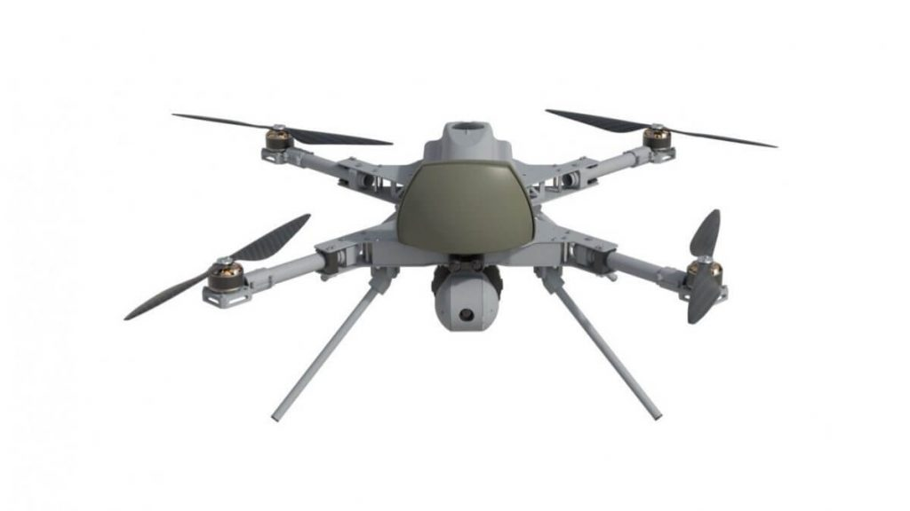

စစ်လေ့ကျင့်ခန်း ပြီးလို့ ခန နားနေ ကြချိန်မှာ ပျားတွေ ပျံနေသလို အသံမျိုး အရှေ့ဖက် အရပ်ဆီက ထွက်ပေါ် လာပါတယ်။ ဒီ အသံနဲ့ မရှေးမနှောင်း မှာပဲ အရှေ့အရပ် မိုးကောင်းကင်မှာ အမဲရောင် တိမ်တိုက်ကြီး တစ်ခုဟာ လျင်မြန်တဲ့ အလျင်နဲ့ ရွှေ့လျား လာနေတာကို တွေ့လိုက်ကြရပါတယ်။
ဒီ အချိန်မှာပဲ အမေရိကန် စစ်သားတွေ အနားယူနေတဲ့ နေရာ အပေါ်ကို ကင်းထောက် ဒရုန်း တစ်စင်းက ဖြတ်ပြီး ပျံသွားပါတယ်။ ဒီ ဒရုန် ဖြတ်ပျံသွားတာနဲ့ မရှေးမနှောင်း မှာပဲ ခုနက တိမ်တိုက်ကြီးဟာ ရုတ်တရက် လမ်းကြောင်းပြောင်း သွားပြီး အမေရိကန် တပ်သားတွေ စခန်းချနေရာ အရပ်ဆီကို လျင်မြန်တဲ့ အရှိန်နဲ့ ချီတက်လို့ လာနေပါတော့တယ်။
မိနစ် အနည်းငယ် အတွင်းမှာပဲ အခု ၆၀ လောက် ရှိတဲ့ တိုက်ခိုက်ရေး ဒရုန်းတွေ ရောက်လာပါတယ်။ ဒီ ဒရုန်းတွေဟာ AI ဉာဏ်ရည်တု နဲ့ ထိန်းချုပ်တဲ့ ဒရုန်းတွေ ဖြစ်ကြပါတယ်။ ဒီ ဉာဏ်ရည်တုရဲ့ ထိန်းချုပ်မှုနဲ့ ဒရုန်းတွေဟာ မြေပြင်က အမေရိကန် စစ်သားတွေကို ရှာဖွေပြီး ပစ်မှတ်တွေ သတ်မှတ်လိုက် ကြပါတယ်။
ဉာဏ်ရည်တုက ဘယ် ပစ်မှတ် ကိုမှ ဒရုန် တစ်ခုထက် ပိုပြီး မချိန်အောင် ထိန်းချုပ် ကြီးကြပ် ပေးပါတယ်။ တခန အတောအတွင်းမှာပဲ ဒရုန်းတွေက ပစ်လွှတ်လိုက်တဲ့ ကျည်ဆန် တွေဟာ မြေပြင်က စစ်သားတွေ ပေါ်ကို တရစပ် ကျရောက် လာပါတော့တယ်။
အပေါ်က ပြောခဲ့တဲ့ ဖြစ်ရပ်ဟာ စိတ်ကူးယာဉ် ဝတ္ထုထဲက အဖြစ်အပျက် မျိုးနဲ့ အလားသဏ္ဍာန် ဆင်တူပါတယ်။ ၂၀၂၀ ခုနစ် မတိုင်မီ အထိကတော့ ဒီလို အေအိုင် ဉာဏ်ရည်တု ထိန်းချုပ်တဲ့ ဒရုန်းတွေ ဆိုတာက သိပ္ပံ ဝတ္ထု တွေ ထဲမှာပဲ ရှိခဲ့တာ မို့ပါ။
ဒါပေမယ့် ၂၀၂၀ ခုနှစ် မတ်လမှာတော့ ဒါတွေ အကုန် ရုတ်တရက် ပြောင်းလဲ သွားပါတယ်။ အဲ့သည်နှစ် မတ်လထဲမှာ လူ့သမိုင်းမှာ ပထမဆုံး အကြိမ်အဖြစ် လူသား ထိန်းချုပ်မှု မရှိပဲ AI ကနေ လုံးဝ ထိန်းချုပ်ထားတဲ့ ဒရုန်းတွေက လူသားတွေကို တိုက်ခိုက်မှု ဖြစ်စဉ် ဖြစ်ပွားခဲ့ပါတယ်။
ဒီဖြစ်စဉ်ဟာ လစ်ဗျား ပြည်တွင်းစစ် အတွင်း ဖြစ်ပွားခဲ့တာ ဖြစ်ပါတယ်။ ဒီ ဖြစ်စဉ်မှာ လစ်ဗျား ကြားဖြတ် အစိုးရရဲ့ တပ်ဖွဲ့တွေဟာ ဆန့်ကျင်ဖက် ဟတ်ဖ်တာ တပ်ဖွဲ့ဝင် တွေကို တူရကီ နိုင်ငံလုပ် Kargu-2 (“Hawk 2”) ဒရုန်းတွေနဲ့ တိုက်ခိုက်ခဲ့ ပါတယ်။
ဒီ ဒရုန်းဟာ Hunter Killer လို့ ခေါ်တဲ့ ရန်သူကို ရှာဖွေ၊ ပစ်မှတ် သတ်မှတ်ပြီး တိုက်ခိုက်နိုင်တဲ့ ဒရုန်း အမျိုးအစား ဖြစ်ပါတယ်။ သူ့ရဲ့ ထူးခြားချက် ကတော့ လူသား ထိန်းချုပ်မောင်းနှင်သူ မလိုပဲ သူ့မှာ ပါတဲ့ AI ခေါ် ဉာဏ်ရည်တုက ထိန်းချုပ်မောင်းနှင် နိုင်ခြင်းပဲ ဖြစ်ပါတယ်။ ဒီလို ထိန်းချုပ် မောင်းနှင် ရုံသာမက မြေပြင်က ရန်သူတွေ ကိုလဲ ရှာဖွေပြီး လိုအပ်သလို ပစ်မှတ် သတ်မှတ်ကာ ချေမှုန်း နိုင်စွမ်း ရှိပါတယ်။

ဒီ Kargu-2 တိုက်ခိုက်ရေး ဒရုန်းဟာ ပန်ကာ ၄ လုံးတပ် တိုက်ခိုက်ရေး ဒရုန်း ဖြစ်ပြီး တူရကီ နိုင်ငံ STM လက်နက် ထုတ်လုပ်ရေး ကုမ္ပဏီက ထုတ်လုပ်ထားတာ ဖြစ်ပါတယ်။ သူ့မှာ ရန်သူ လူ နဲ့ ယာဉ်တွေကို ထောက်လှမ်း နိုင်မယ့် အာရုံခံ ကိရိယာတွေ တပ်ဆင်ထားပြီး ဉာဏ်ရည်တု အီလက်ထရောနစ် ဦးဏှောက်လဲ ပါဝင်ပါတယ်။ နောက်ပြီး မြေပြင် ပစ်မှတ်တွေကို တိုက်ခိုက်ဖို့ ပေါက်ကွဲအားပြင်း ဗုံးလဲ သယ်ဆောင်နိုင်ပါတယ်။
ကုမ္ပဏီရဲ့ ကြော်ငြာတွေမှာ ဒီ ဒရုန်းဟာ ဉာဏ်ရည်တုကို အသုံးပြုပြီး လူထိန်းချုပ်မှု မပါပဲ ပစ်မှတ်တွေကို အလိုအလျောက် ရှာဖွေ တိုက်ခိုက် နိုင်တယ် လို့ ရေးသားထားပါတယ်။
Kargu-2 တိုက်ခိုက်ရေးဒရုန်းဘယ်လိုအလုပ်လုပ်သလဲ
ဒီ ဒရုန်း မပျံတက်မီမှာ ဒရုန်း စစ်ဆင်ရေး တာဝန် ထမ်းဆောင်ရမယ့် ဧရိယာ နဲ့ ပစ်မှတ်ရဲ့ သတ်မှတ်ချက် (ကား၊ လူ၊ အဆောက်အဦ အစရှိသဖြင့်) တွေကို အရင် သတ်မှတ် ပေးရပါတယ်။ ဒီ့နောက်မှာ ဒရုန်းဟာ ဒီ ဧရိယာကို ပျံသန်းသွားပြီးနောက် သူ့ စစ်ဆင်ရေး နယ်မြေ အပေါ်မှာ ပျံသန်းပြီး ရန်သူကို ရှာဖွေမှာ ဖြစ်ပါတယ်။သူ့ စစ်ဆင်ရေး နယ်မြေမှာ သတ်မှတ်ထားတဲ့ ပစ်မှတ်နဲ့ အလားတူတဲ့ အရာဝတ္ထုတွေကို ရှာဖွေ တွေ့ရှိ တဲ့အခါ သူ့မှာ ပါတဲ့ AI က ဒီ အရာဝတ္ထုဟာ တိုက်ခိုက်ရမယ့် ပစ်မှတ် ဟုတ်မဟုတ်ကို ဆုံးဖြတ် ပေးပါတယ်။ AI က ပစ်မှတ်လို့ သတ်မှတ်လိုက်ရင် ဒရုန်းကို လျင်မြန်စွာ ပစ်မှတ်ဆီ ပျံသန်းပြီး ဒရုန်းမှာ တပ်ဆင်ထားတဲ့ ဗုံးကို ဖေါက်ခွဲပြီး အနီးကပ် တိုက်ခိုက်မှာ ဖြစ်ပါတယ်။
“သမိုင်းမှာ ပထမဆုံး AI လက်နက်တွေရဲ့ တိုက်ခိုက်မှုဟာ ရုပ်ရှင်တွေ ထဲကလို ကောင်းကင်မှာ ကြီးမားတဲ့ ပေါက်ကွဲမှု တွေနဲ့ စတင်မှာ မဟုတ်ပါဘူး” လို့ အမေရိကန် တပ်မတော်က အေအိုင် သုတေသီ ဇာချာရီ ကယ်လဘွန်း (Zachary Kallenborn) က ရှင်းပြပါတယ်။
“ဒီ အေအိုင် ဒရုန်းတွေဟာ ရုတ်တရက် ကြည့်ရင် သာမန် လုပ်ငန်းသုံး ဒရုန်းတွေလိုပဲ ထင်ရပါလိမ့်မယ်။ အခု လစ်ဗျားမှာ ဖြစ်သွားတဲ့ ဖြစ်စဉ်ကို ကြည့်ရင် ဒီလို အေအိုင် လက်နက်တွေကို တားဆီး ကန့်သတ်ဖို့ (သို့) ထိန်းချုပ်ဖို့ ဘယ်လောက်ထိ ခက်ခဲလဲ ဆိုတာကို ပြနေပါတယ်” လို့ သူက ဆက်ပြောပါတယ်။
“ AI လက်နက်တွေ အသုံးပြုတယ် ဆိုတာကိုတောင် ဘယ်လို သက်သေ ပြကြမလဲဗျာ” လို့လဲ သူက ညည်းတွားပါတယ်။
ရီမုတ်ကွန်ထရိုးနဲ့ ထိန်းချုပ်တဲ့ ဒရုန်းနဲ့ အေအိုင် ဒရုန်းနဲ့ အဓိက ကွာခြားမှု ကတော့ အေအိုင် ဒရုန်းထဲ ပါတဲ့ ဉာဏ်ရည်တု software ပဲ ဖြစ်ပါတယ်။ ဒါပေမယ့် ပြဿနာက ဒီ ဉာဏ်ရည်တု software ကို စစ်ဆေးဖို့ ဒရုန်း အပျက်အစီး ထဲကနေ ပြန်ထုတ်ယူဖို့ ဆိုတာက အတော်လေးတော့ ခက်ခဲမယ့် ကိစ္စ ဖြစ်ပါတယ်။
အမေရိကန် တပ်မတော် ကလဲ အေအိုင် ဒရုန်းတွေ စမ်းသပ် နေပါတယ်။ ဒါပေမယ့် အမေရိကန် ပြည်ထောင်စုက စမ်းသပ်တဲ့ အေအိုင် ဒရုန်းတွေနဲ့ တူရကီက ထုတ်တဲ့ Kargu-2 ဒရုန်းရဲ့ အဓိက ထူးခြားချက် ကတော့ အမေရိကန် တပ်မတော်ရဲ့ ဒရုန်းက ပစ်မှတ်ကို တိုက်ခိုက်ဖို့ ဆုံးဖြတ်ချက်ကို “လူ” က ဆုံးဖြတ်ချက် ချပေးတာ ဖြစ်ပါတယ်။ ဒရုန်းက ရန်သူကို သူ့အလိုအလျောက် ရှာဖွေ ပေးပေမယ့် ဒီ ရန်သူကို တိုက်ဖို့ ဆုံးဖြတ်ချက် ကိုတော့ ဒရုန်းကို ထိန်းချုပ်တဲ့ ပိုင်းလော့ က ဆုံးဖြတ်ပေးရမှာ ဖြစ်ပါတယ်။ ဒီနည်းနဲ့ အရပ်သား တွေကို မှားယွင်း တိုက်ခိုက်မှု မျိုးကို ရှောင်ရှားနိုင်မှာ ဖြစ်ပါတယ်။
Kargu-2 ဒရုန်းကတော့ လူ ဆုံးဖြတ်ချက် မလိုပဲ သူ့မှာပါတဲ့ အေအိုင် ဉာဏ်ရည်တု ဦးဏှောက်က တိုက်ဖို့ မတိုက်ဖို့ ဖုံးဖြတ်ချက် ချနိုင်မှာ ဖြစ်ပါတယ်။
ကမ္ဘာ့ သမိုင်းမှာ အချို့သော အဖြစ်အပျက် တွေဟာ သမိုင်းတကွေ့ရဲ့ အလှည့်အပြောင်း အတွက် အရေးကြီးတဲ့ မှတ်တိုင်တွေ အဖြစ် ကျန်ရစ်ခဲ့ တတ်ကြပါတယ်။ ဥပမာ ၁၉၄၅ ခုနှစ် နယူး မက်ဆီကို သဲကန္တာရ ထဲက အဏုမြူဗုံး စမ်းသပ် ဖေါက်ခွဲ မှုဟာ အဏှမြူ မတိုင်မီ ခေတ်နဲ့ အဏုမြူ ခေတ်ကို ပိုင်းခြားပေး လိုက်တဲ့ မှတ်တိုင် တစ်ခု ဖြစ်နေပါတယ်။
ဒီလိုပဲ လစ်ဗျားက အေအိုင် ဒရုန်းတွေရဲ့ လူသား စစ်သည်တွေကို တိုက်ခိုက်မှုဟာ လူသားတွေ လက်ထဲ လက်နက် ရှိနေတဲ့ ခေတ်နဲ့ လက်နက်တွေကို အေအိုင် စက်ရုပ်တွေက အပြည့်အဝ ထိန်းချုပ်တဲ့ ခေတ် နှစ်ခုကို ပိုင်းခြားပေးလိုက်တဲ့ သမိုင်း မှတ်တိုင် တစ်ခု ဖြစ်ကောင်း ဖြစ်လာနိုင်ကြောင်း တင်ပြလိုက် ရပါတယ်။
(မှတ်ချက် – လက်ရှိ ဒီ ဆောင်းပါး ရေးသားချိန်မှာ ဒီ Kargu-2 အေအိုင် ဒရုန်းကို ထုတ်လုပ်တဲ့ STM ကုမ္ပဏီက ဒီဒရုန်းနဲ့ ပါတ်သက်တဲ့ အချက်အလက်တွေကို သူတို့ website ပေါ်ကနေ ဖယ်ရှားလိုက်ပြီလို့ သိရပါတယ်။)
Reference: Autonomous Drones Have Attacked Humans. This Is a Turning Point | Popular Mechanics